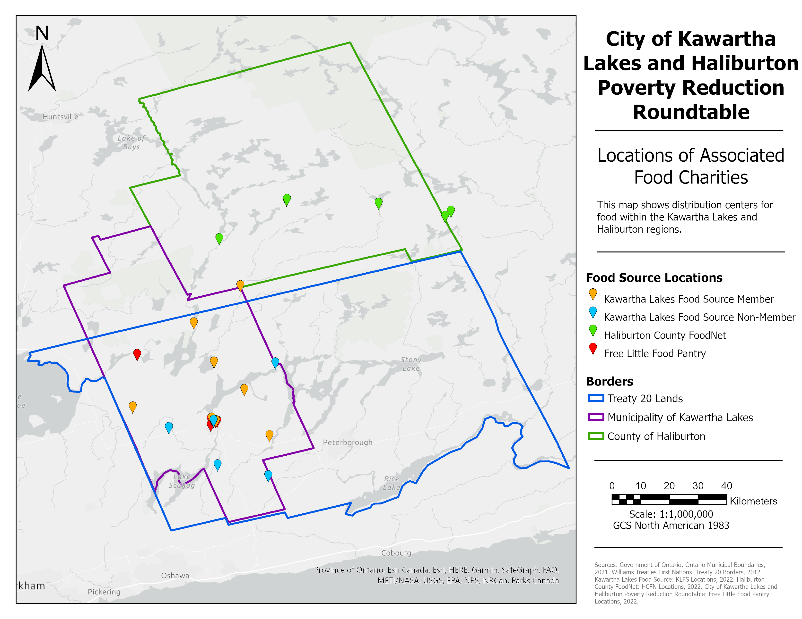
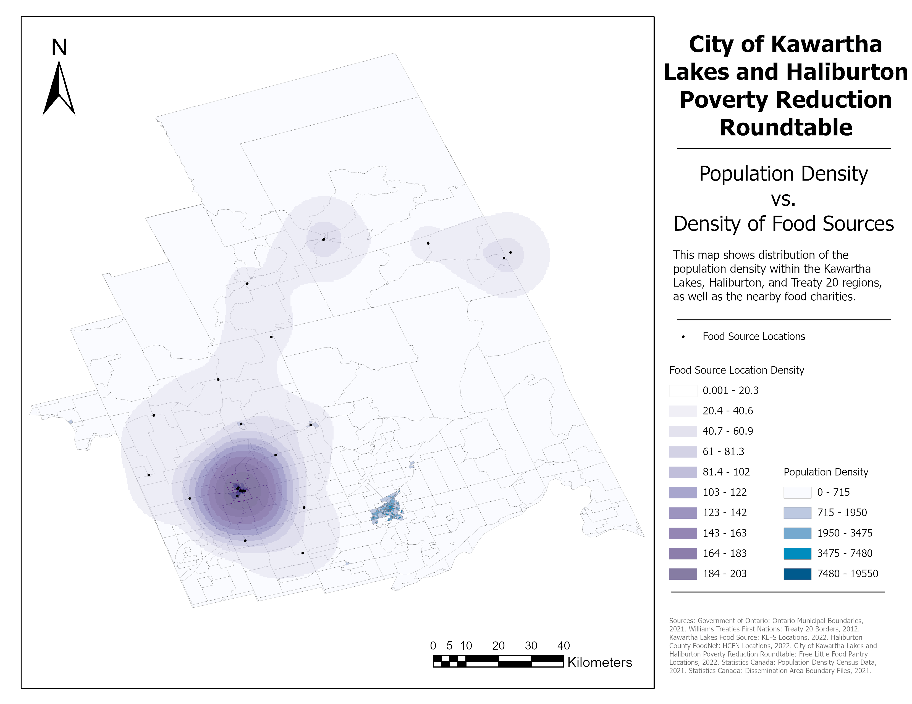
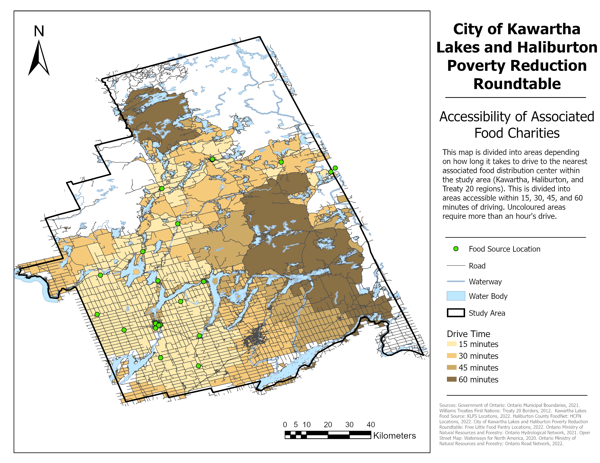

An AGOL & Survey123 Maintenance Guide was created and provided to the client to safeguard successful long term operation.
Now that this project has developed the tools, the next steps are for the client to begin using them. However, because the ArcGIS Online account is tied to the client's access to a student account, they may lose access to it in a few years after they graduate. These years should be used to take note of which parts of the project worked well, and which could use some modifications to better suit their evolving needs. If their project is successful and the tools we created are helpful, they can pay for a private ArcGIS account and transfer ownership of the project over.
This project is part of an ongoing effort to help reduce the amount of food poverty in Ontario, and is an example of how GIS technology can be applied to solve a variety of problems. This project will hopefully inspire other regions to take advantage of underutilized resources as well.
Check out the links to the deliverables of the project:
New Website for the Kawartha Lakes and Haliburton Community Harvesting and Sharing Program
  